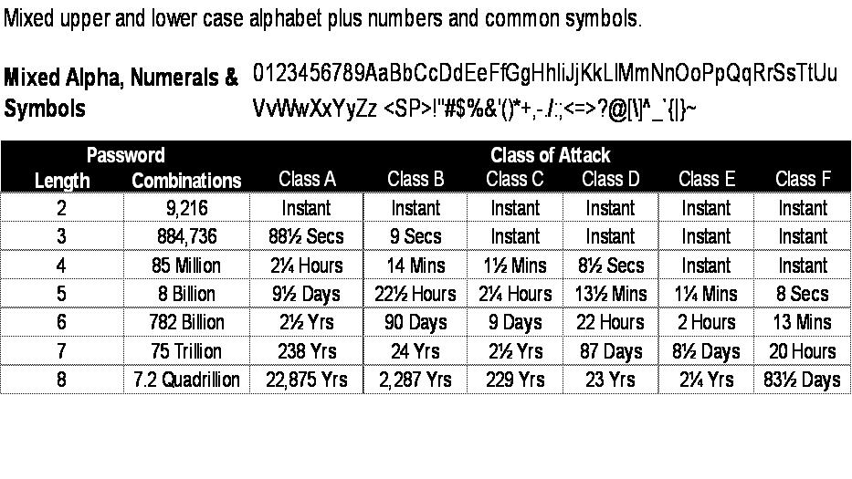

COMP 116: Introduction to Computer Security
Cryptography
Definitions
- Cryptography - The process of communicating secretly through the use of cipher
- Cryptanalysis - The process of cracking or deciphering; code breaking
- Cryptology The study of cryptography or cryptanalysis
- History goes back to wartimes (e.g., Caesar Cipher, Enigma)
- Cleartext / plaintext - duh!
- Cipher - An algorithm to perform encryption and/or decryption
- Cryptosystem - Suite of algorithms to perform encryption and/or decryption
Security of a Cryptosystem (thanks Giovanni)
- The only perfectly secure algorithm is the one-time pad
- Is any crypto algorithm perfectly secure?
- Tradeoff 1: the cost of breaking a cipher exceeds the value of the encrypted information
- Tradeoff 2: the time required to break the cipher exceeds the useful lifetime of the information
- Very difficult to estimate cost and time required to break a cipher
- There is always brute force
- ...and then there is plain-old stealing or just asking for it
About the One-Time Pad
- Invented in 1917
- Impossible to crack
- The secret key (the cipher), with random data, must be the same length as the plaintext
- Assume "A" = 0, "B" = 1, "C" = 2, etc.
- Simple to use: just XOR, modular addition
- Encryption: addition, mod 26
- Decryption: subtraction, if result is negative, add 26 and mod 26
- Rather impractical: the weakest link
Algorithms
- Symmetric - single key for encryption and decryption
- Asymmetric a.k.a., public key - uses two different keys: one public (for encryption) and one private (for decryption)
- Hash functions - one way encryption, no decryption thus no secret key
- Random number generation
Symmetric Algorithm
- See One-Time Pad
- Let K = secret key, C = Ciphertext, and P = Plaintext
- C = Ek(P)
- P = Dk(C)
- Strengths:
- Modified key K will result in garbage plaintext in decryption
- Weaknesses:
- Those who know K can participate in communications (eavesdropping)
- Impersonation attack if attacker knows K
- Not good for authenticity
Hash Functions
- Maps a variable length string of data to produce a fixed-length output in deterministic, public, and random manner
- No secret key
- Properties
- One-way: cannot decrypt
- No collisions: two unique strings cannot produce the same result
- Randomness
- Unfeasible to produce the whole hash space (pre-image resistance)
- Given a hash result, unfeasible to produce the string
- Strengths:
- Weaknesses:
- Applications:
- Password storage
- Checksum of software packages
- Digital signatures
- Commitment (e.g., GitHub)
Application: Password Cracking

- Two files of interest on a typical Linux box:
- Methods:
Key Distribution Center (KDC)
- Alice and Bob share secret keys with KDC
- If Alice wants to talk to Bob securely, Alice tells KDC that she wants to talk to Bob
- KDC generates a session (or temporary) key to Alice and Bob for communications
- Strengths:
- Discrete number of keys
- Temporary key is limited to a session
- Weaknesses:
- Single point of failure: the KDC
- KDC has to be available
Asymmetric Cryptography
- Alice and Bob agree on a public-key cryptosystem
- Alice and Bob have their own public and private keys
- Alice gives Bob her public key
- Bob encrypts message with Alice's public key
- Alice decrypts the message with her private key
- Even better: key signing (encrypt message with own private key)
- Strengths:
- Public key can be distributed any way possible
- Confidentiality: only holder of private key can decrypt message
- Integrity: any modification of the message would be revealed when decrypting
- Non repudiation: Bob can prove to a third party that Alice is the originator of the message
- Weakness:
- No authentication: anyone can encrypt a message given a public key
- MITM
- Arguably the most popular algorithm: RSA. Walkthough: http://www.di-mgt.com.au/rsa_alg.html
Public Key Certificates
- Used to associate an identity (e.g., Alice and Bob) with a public key
- The association is guaranteed by a trusted third party, the Certification Authority (CA)
- The CA owns a public key and a private key
- The CA creates a self-signed certificate that is distributed through many channels
- The CA signs certificates containing identity and corresponding public key after having verified the identity of the requester
- Certificates are made available in public databases or exchanged online
- Communications:
- Both Alice and Bob have the CA self-signed certificate
- When Alice wants to send a message to Bob:
- She retrieves Bob's certificate from a public database
- She verifies the CA's signature on Bob's certificate
- She extracts Bob's public key
- She uses the Bob's public key and her own secret key to encrypt the message
- When Bob receives the message:
- He retrieves Alice's certificate from a public database
- He verifies the CA's signature on Alice's certificate
- He extracts Alice's public key
- He uses his own private key to decrypt the message and Alice's public key to verify the signature